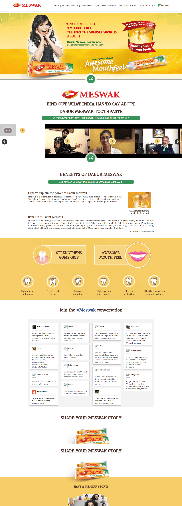

Explain the product’s hero ingredient and oral-care proposition without turning the page into a dense technical document.
← Back to workProduct proof.
Dabur Meswak · Oral-Care Website
Product proof.
Powered by people.

Project overview
Explain the ingredient.
Let experience build belief.
Meswak’s differentiation begins with pure Miswak extract and a complete oral-care proposition.
We transformed that product story into a responsive experience where ingredient education, benefit clarity, expert voices and real user stories work together.
- Platform
- Brand + Education
- Core Story
- Miswak Extract
- Participation
- User Stories
- Build
- Responsive Web
The organising idea
A claim becomes stronger
when people make it theirs.
The website does not stop at listing product benefits. It moves from the Miswak ingredient and oral-care education into testimonials, conversation and story submission.
That shift turns product communication into a visible community of experience.
The experience challenge
Balance useful detail.
Keep the energy approachable.
Give testimonials, social conversation and user submissions enough prominence to feel central—not added on.
The experience flow
Discover. Believe.
Join the conversation.
- 01
Introduce
Lead with the product, an expressive personality and one memorable mouthfeel proposition.
- 02
Validate
Use real voices and video testimonials to make product experience tangible.
- 03
Explain
Organise ingredient and benefit information into clear, scannable modules.
- 04
Invite
Connect social conversation and story submission to active participation.
The complete website
One long-form story.
Every section earns the next.
The page progresses from brand promise to social proof, product explanation and community participation in one continuous narrative.
Responsive brand experienceProduct, proof, benefits and participation

The proof system
Not one voice.
A chorus of experience.
Video testimonials
Human stories give the product proposition recognisable faces and credible context.
Expert explanation
Ingredient and oral-care information provide a structured reason to believe.
Social conversation
Community posts make brand participation visible within the experience.
Story submission
A clear invitation turns passive reading into active contribution.
Designed for consistency
Bright on every screen.
Clear at every step.
A warm yellow product world, disciplined red and green cues, and a clear vertical hierarchy keep the experience recognisable across devices.

The outcome
A product website
with people at its centre.
A responsive brand destination that turns a differentiated ingredient story into education, social proof and participation—giving users multiple reasons to understand and engage.
Clearer proposition
The ingredient and complete oral-care story are organised into an understandable journey.
Visible proof
Testimonials and user voices strengthen the connection between promise and experience.
Active community
Social content and story submission move the audience from viewing to participating.
Explain the difference.Invite people in.
Building a product story people can join?